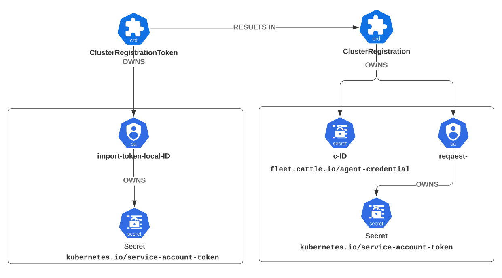

Internos de Registro de Cluster
Como funciona o registro de cluster?
Este texto descreve o registro de cluster com mais detalhes técnicos. O texto ignora o registro iniciado pelo agente, pois não é comumente utilizado. O registro iniciado pelo agente é "`ClusterRegistrationToken` primeiro", o que significa que a pré-criação de um cluster é opcional.
Veja Registrar Clusters Descendentes para aprender como registrar clusters.
Cluster primeiro
fleet-controller inicia e pode inicializar o recurso do cluster local. No Rancher, a criação do recurso do cluster local é tratada pelo controlador fleetcluster, mas, de outra forma, o processo é idêntico.
O processo é idêntico para o cluster local ou qualquer cluster downstream. Começa criando um recurso de cluster, que se refere a um segredo kubeconfig.
Criando o Segredo de Inicialização para o Cluster downstream
Nesta etapa, um ClusterRegistationToken e uma conta de serviço "importar" são criados com base em um recurso Cluster.
O controlador SUSE® Rancher Prime Continuous Delivery cria um ClusterRegistrationToken e aguarda sua conclusão. O ClusterRegistationToken aciona a criação da conta de serviço "importar", que pode criar ClusterRegistrations e ler qualquer segredo no namespace de registro do sistema (por exemplo, "cattle-fleet-clusters-system"). O controlador import.go se enfileirará até que a conta de serviço "importar" exista, pois essa conta é necessária para criar o segredo fleet-agent-bootstrap.
Criando o SUSE® Rancher Prime Continuous Delivery Implantação do Agente
O controlador SUSE® Rancher Prime Continuous Delivery agora criará a implantação do agente SUSE® Rancher Prime Continuous Delivery e o segredo de inicialização no cluster descendente.
O segredo de inicialização contém a URL do servidor API do cluster ascendente e é usado para construir um kubeconfig para acessar o cluster ascendente. Ambos os valores são retirados do configmap de configuração do controlador SUSE® Rancher Prime Continuous Delivery. Esse configmap faz parte do chart Helm.
SUSE® Rancher Prime Continuous Delivery Agente Inicia Registro, Atualiza para Conta de Solicitação
O agente usa a conta 'importar' para fazer upgrade para uma conta de solicitação.
Imediatamente o agente SUSE® Rancher Prime Continuous Delivery verifica se há um segredo fleet-agent-bootstrap. Se o segredo de inicialização, que contém o kubeconfig "importar", estiver presente, o agente começa a registrar.
Então o agente cria o recurso final ClusterRegistration em fleet-default no cluster de gerenciamento, com um número aleatório. O número aleatório será usado para o nome do segredo de registro.
O controlador SUSE® Rancher Prime Continuous Delivery é acionado e tenta conceder a solicitação ClusterRegistration para criar a conta de serviço do agente e criar o segredo de registro 'c-*' com o novo kubeconfig do cliente. O nome do segredo de registro é hash("clientID-clientRandom").
O novo kubeconfig usa a conta "solicitação". A conta "solicitação" pode acessar o status do cluster, BundleDeployments e Contents.

SUSE® Rancher Prime Continuous Delivery Agente está Registrado, Observa por BundleDeployments
Neste ponto, o agente está totalmente registrado e persistirá a conta 'solicitação' em um segredo fleet-agent.
A URL do servidor API e o CA são copiadas do segredo de inicialização, que herdou esses valores dos chart Helm do controlador SUSE® Rancher Prime Continuous Delivery.
O segredo de inicialização é excluído. Quando o agente reiniciar, ele não irá se registrar novamente, uma vez que o segredo de inicialização está ausente.
O agente começa a observar seu namespace do cluster para BundleDeployments. Neste ponto, o agente está pronto para implantar cargas de trabalho.
Notes
-
O registro começa com a conta 'importar' e muda para a conta 'solicitação'.
-
O namespace fleet-default tem todos os registros do cluster, a conta "importar" usa um namespace separado.
-
Uma vez que o agente esteja registrado,
fleet-controllerserá acionado em uma mudança de cluster ou namespace. O controladormanageagententão criará um pacote para adotar a implantação do agente existente. O agente irá se atualizar para o pacote e, como a variável de ambiente "geração" muda, ele será reiniciado. -
Se não existir um segredo de inicialização, o agente não se registrará novamente.
Diagrama
Fluxo de Registro
Token de Registro do Cluster) --> A2{Fleet Controller Creates Secret
for a temporary 'import' ServiceAccount} end subgraph "Fluxo 2: Iniciado pelo Gerente (para cluster existente)" direction TB B1(Admin cria segredo Kubeconfig
para um cluster existente) --> B2(Admin cria recurso de cluster
referenciando o segredo Kubeconfig.
Pode definir um clientID aqui) B2 --> B3{Fleet Controller uses admin-provided
kubeconfig to deploy agent} end end subgraph "Downstream (Cluster Gerenciado)" direction LR subgraph "Instalação do Agente (Fluxo 1)" direction TB A3(Admin instala o Fleet Agent via Helm
usando o segredo do token 'importar'.
Pode fornecer clientID) end subgraph "Agente Implantado (Fluxo 2)" direction TB B4(Agente e segredo de inicialização são implantados.
Inicialização contém um kubeconfig 'importar'.) end end subgraph "Estágios Comuns de Registro (Handshake de Identidade)" direction TB C1(O pod do agente inicia, usando seu SA 'agente' local.
Encontra e usa o kubeconfig 'importar'
do segredo de inicialização para se comunicar com o Upstream.) C1 --> C2(Usando sua identidade 'importar', o Agente cria
um recurso de Registro de Cluster no Upstream) C2 --> C3{Upstream Controller creates a permanent
'request' ServiceAccount & a new,
long-term kubeconfig/secret for it.} C3 --> C4(O Agente recebe e persiste as
credenciais do SA 'solicitação'.
O segredo temporário de inicialização é excluído.) C4 --> C5{Upstream Controller creates a dedicated
Cluster Namespace for this agent.} C5 --> C6(✅ Agente totalmente registrado.
Usa sua identidade 'solicitação' para observar
as workloads em seu namespace.) end %% Estilização style A0 fill:#e0f2fe,stroke:#0ea5e9,stroke-width:2px style A1 fill:#e0f2fe,stroke:#0ea5e9,stroke-width:2px style B1 fill:#e0f2fe,stroke:#0ea5e9,stroke-width:2px style A3 fill:#d1fae5,stroke:#10b981,stroke-width:2px style B2 fill:#e0f2fe,stroke:#0ea5e9,stroke-width:2px style A2 fill:#fef3c7,stroke:#f59e0b,stroke-width:2px style B3 fill:#fef3c7,stroke:#f59e0b,stroke-width:2px style B4 fill:#fef3c7,stroke:#f59e0b,stroke-width:2px style C1 fill:#f3e8ff,stroke:#8b5cf6,stroke-width:2px style C2 fill:#f3e8ff,stroke:#8b5cf6,stroke-width:2px style C3 fill:#f3e8ff,stroke:#8b5cf6,stroke-width:2px style C4 fill:#f3e8ff,stroke:#8b5cf6,stroke-width:2px style C5 fill:#f3e8ff,stroke:#8b5cf6,stroke-width:2px style C6 fill:#dcfce7,stroke:#22c55e,stroke-width:2px,font-weight:bold %% Conexões A2 --> A3 B3 --> B4 A3 --> C1 B4 --> C1
Processo de Registro e Controladores
Análise detalhada do processo de registro para clusters. Isso mostra a interação de controladores, recursos e contas de serviço durante o registro de um novo cluster downstream ou do cluster local.
É importante notar que existem várias maneiras de iniciar isso:
-
Criando uma configuração de bootstrap. SUSE® Rancher Prime Continuous Delivery faz isso para o agente local.
-
Criando um recurso
Clustercom um kubeconfig. O Rancher faz isso para clusters downstream. Veja registro iniciado pelo gerente. -
Crie um recurso
ClusterRegistrationToken, opcionalmente crie um recursoClusterpara um cluster pré-definido (clientID). Veja registro iniciado pelo agente.

Segredos durante a Implantação do Agente
Este diagrama mostra os recursos criados durante o registro e foca na configuração do servidor API do k8s.
O controlador import.go é acionado em eventos de criação/atualização do Cluster e implanta o agente.
Esta imagem mostra como a URL do servidor API e o CA se propagam pelos segredos durante o registro:
As setas no diagrama mostram como os valores do servidor API são copiados dos valores do Helm para o segredo de registro do cluster no cluster upstream e, finalmente, para o segredo de inicializar do agente.
Há um caso especial, se o agente for para o cluster local/"inicializar", os valores do servidor também existem no segredo kubeconfig, referenciado pelo recurso Cluster. Neste caso, o segredo kubeconfig contém a URL do servidor upstream e o CA, ao lado do kubeconfig downstream. Se as configurações estiverem presentes no segredo kubeconfig, elas substituem os valores configurados.

SUSE® Rancher Prime Continuous Delivery Registro de Cluster no Rancher
O Rancher instala o chart Helm do Fleet. A URL do servidor API e o CA são derivados das configurações do Rancher.
SUSE® Rancher Prime Continuous Delivery passará esses valores para um agente SUSE® Rancher Prime Continuous Delivery, para que ele possa se conectar de volta ao controlador SUSE® Rancher Prime Continuous Delivery.
Importar Cluster para o Rancher
Quando o usuário executa curl | kubectl apply, o manifesto aplicado inclui a implantação do agente Rancher.
A implantação contém um segredo cattle-credentials- que contém a URL da API e um token.
O agente Rancher inicia e reporta o kubeconfig do downstream para o upstream.
Em seguida, o Rancher cria o recurso de Cluster do Fleet, que referencia um segredo kubeconfig.
👉SUSE® Rancher Prime Continuous Delivery usará este kubeconfig para implantar o agente no cluster downstream.